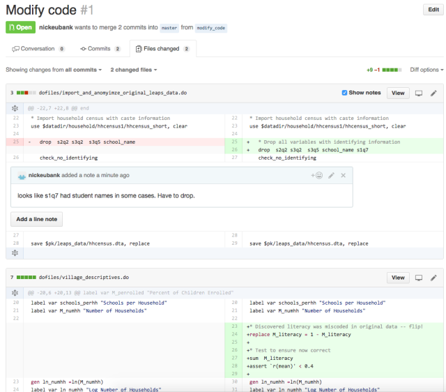

Git and Github#
What Is Git(hub) & Why Should I Learn It?#
Git and github are a set of tools designed to facilitate collaboration on code. They make it possible for multiple people (in some cases, dozens or even hundreds of people) to work on code at the same time without getting in one another’s way. (Note: as we’ll discuss below, git and github are technically two different things, but you’ll almost certainly use them together, so I’m just going to call them “git” for now).
It is no exaggeration to say that git (and other forms of version control software) underlie the entire world of open source software, and are central to the operation of nearly every tech company on the planet. Git is just a central part of how software is developed today.
Git is less commonly used in Data Science, however, where people are often working in groups that are small enough they feel comfortable just keeping their code on Dropbox and trying to make sure that collaborators never work on the same file at the same time (in the hopes of never creating a dreaded Conflicted Copy file). But git and github have much to offer the modern data scientist, even if they only work on small teams and don’t want to contribute to larger software projects. In particular, here are the main benefits I see for git and github in order of likelihood of relevance for an applied data scientist (the sort who answers ad hoc questions like an academic researcher, rather than writes data analysis routines into widely distributed software):
Keep an archive of every version of your project: Git works by logging the work you do on your project into a series of discrete sets of changes called “commits”. Crucially, it remembers all of your commits, making it possible to easily go back to a previous version of the project any time you want. Suddenly discover that your co-author deleted the code for your favorite graph weeks ago and you didn’t notice till now? No problem! You can easily recover the version of that file that existed before your co-author’s mistake.
All you and your co-authors to work at the same time: Git is much more forgiving when it comes to allowing people to edit the same document at the same time. Git treats each line in a text document separately, so if your co-author is editing the introduction of your paper (assuming it’s in a text format like \(\LaTeX\)) while you’re editing the conclusion, git can easily integrate your simultaneous edits. Moreover, if you do both edit the same line of code or text, then git will help you resolve those conflicting edits in a very efficient manner instead of what dropbox does: create a
Confliced Copy, and leave you to figure out what changes conflicted and how to integrate both authors’ changes.You can easily see what changes you’re co-author has made: Because git is organized around keeping track of changes (again, called commits), when your co-author makes changes to a document, git allows you to easily see just the changes your co-author has made. This makes it much easier for colleagues to be aware of how their project is changing to watch out of problems (e.g. you can easily see if your co-author recoded a variable in a way that is problematic for code you wrote later). For example, here’s an example of a github report on changes a co-author made in a shared project, where the (red) text on the left is what the code used to say, while the (green) text on the right is what it now says. And github even allows you to comment directly on changes if you want:

Much more helpful than a Drobox “[Name] made changes to [File]” notification. :)
Allows you to contribute to open source projects: This may not be something you’re planning to jump into, but learning git will make this an option. If you find that a package you use doesn’t have a feature you need, the ability to use git will make it possible for you to add that feature to the package, not only allowing you to do what you want to do, but also making that fix available to the broader community.
Allows you to make your project open source so others can contribute to your project: The time may come when you want to write a software package and share it with the world. If you know git, you can also share that code in a way that makes it easy for other people to contribute code and improve that package. Open source isn’t just for big things like Python programming language – it’s also used for lots of little projects, like packages for simulating electoral boundaries to study gerrymandering, or tools to make it easy to access campaign finance data (sorry, I’m a political scientist, so I’m doing poli sci examples, but you get the idea). And you’ll be amazed how many people contribute to these kinds of projects. Indeed, even these tutorials have a github repositoriy where people can submit improvements!
OK, now the bad news: there’s a reason I put so much energy into discussing the value of git before getting into how it works: learning git kinda sucks. I mean, it’s not painful like performing an appendectomy on yourself without anesthesia, and it’s not hard like quantum mechanics or geometric topology; it’s definitely something anyone can learn. But there’s no pretending that git is user friendly, and you’re sure to have a couple of moments when you’ll find yourself thinking (rightly) “why on Earth did they do it like that?”. So before you dive in, it’s good to have the expectation that there’s a initial uphill slog to learning git before it becomes really useful. But I promise: it pays off big time.
Git versus Github#
As I eluded to earlier, though they’re almost always used together, git and github are actually two different things:
gitis the program that keeps track of changes in your code and helps you manage multiple people working on code at the same time.githubis a service that hosts a copy of your project in the cloud so you and your co-authors can easily share project changes. In addition,githubalso has a great interface for reviewing changes to a project in a user friendly manner, and it has an “issue tracker” system for hosting conversations about things that need to be done in a project.
And when it comes to what is user-friendly and what is not, git is the kinda awful thing to learn, and github is magical.
Learning Git#
Below are two videos created by my colleague (and fellow MIDS instructor) Kyle Bradbury on git and github!
git-lfs#
On thing that’s unique to using git for data science is that we often want to put datasets into our git repositories. Unfortunately, git by itself can’t really handle datasets efficiently. To solve this problem, we use git-lfs (git Large File System). You can learn all about it here in this short video!
Getting Help#
A final word on git: there is no way you will internalize the syntax and approaches required to do all the things you might some day need to do. There are just too many things that can happen. But because git is so widely used, there are lots of tutorials out there, and you shouldn’t hesistate to use them. Here are a few great resources for specific topics:
Git command cheatsheet. (Also available from cheatsheet page here.
Exercises#
And now for some git/github exercises!
Duke students: as usual, these are what we’ll be doing in class, not something to be done as homework.